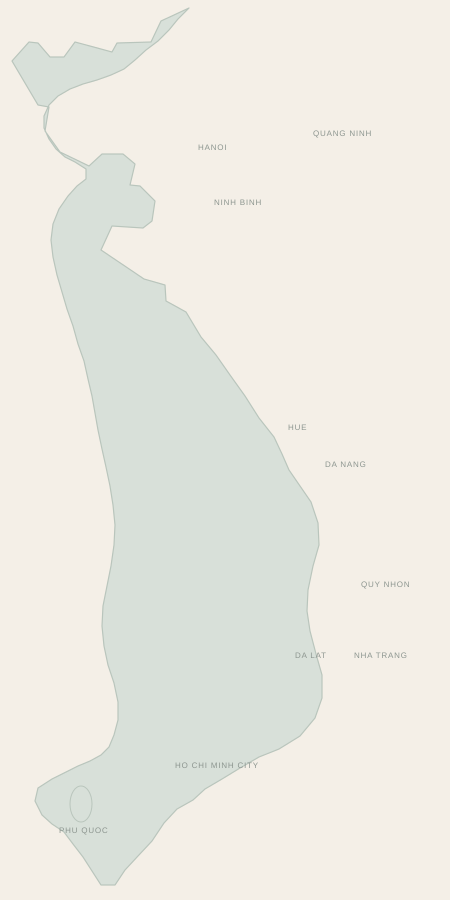

Golf in Vietnam
Find your next round
across Vietnam.
Explore the country by golf destination, then let us connect tee times, hotels and private transfers into one seamless journey.
Explore the mapVietnam golf map
Choose a destination. See the courses nearby.
A simple geographic view of Vietnam’s main golf hubs, from Hanoi and Ha Long in the north to the central coast, Ho Chi Minh City and Phu Quoc.

NorthCentral & HighlandsSouth & Islands
Illustrative map — destination positions are approximate.
One local team
Choose the courses. We will connect the rest.
Tee-time requests, golf bags, private vehicles, hotels and onward travel can all be coordinated around the rounds you want to play.